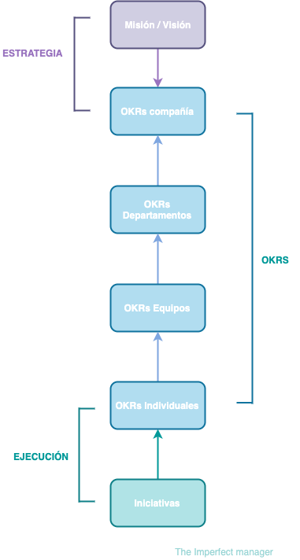
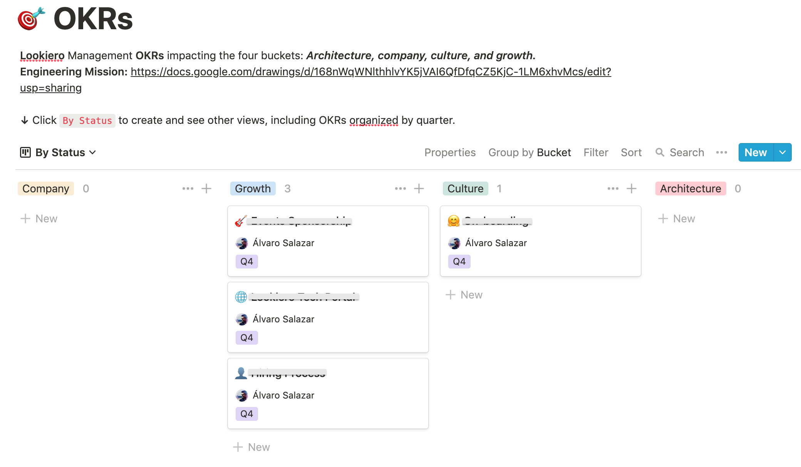
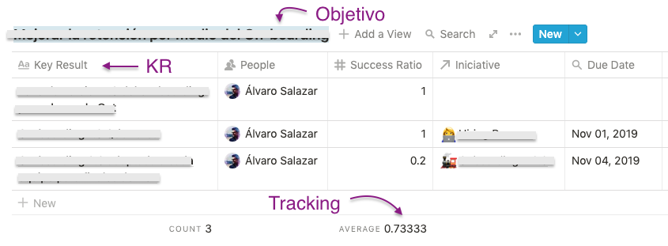

OKR, set your goals! 🎯
Objective Key Results

OKRs, set your goals! 🎯
Introducción
Se acerca el final del año y es justo este el momento de hacer retrospectiva de lo que ha sido el año que vamos dejando atrás, es este el momento en el que revisamos cómo de lejos nos quedamos de los objetivos que nos marcamos a principio del año.
Quiero escribir una pequeña serie de posts sobre herramientas o frameworks que sirven como guía o ayuda a la hora de definir objetivos, como son:
- OKRs
- SMART
- V2MOM
Hay cantidad de estudios que demuestran que estar comprometidos con un objetivo puede ayudar a incrementar el rendimiento de los empleados. Pero más específicamente, lo que revelan estas investigaciones es que establecer objetivos específicos y ambiciosos mejora aún más el compromiso de los empleados con dichos objetivos.
Actualmente me encuentro trabajando en una startup, y como en cualquier otra startup el crecimiento es clave como parte de su modelo de desarrollo. Diría incluso que el crecimiento impacta en casi cada una de las decisiones que se toman.
Hay un buen artículo de Paul Graham en el que define: Startup = Growth.
Esto hace vital que para tener un crecimiento sostenible los equipos necesiten tener un foco claro, estar trabajando en las iniciativas correctas y priorizar en consecuencia. ¿Suena sencillo?, pues te aseguro que es tremendamente complicado y es justo en este punto donde utilizar un método efectivo para la definición de objetivos, que ayuden al equipo a trabajar focalizados hacia un mismo resultado, puede ayudar.
Voy empezar la serie de posts con el framework que más uso a día de hoy, OKRs.
Al final del post compartiré la template de Notion.io que uso para su definición y seguimiento y os contaré alguna pequeña licencia que me permito sobre la definición original del framework.
¿Origen de los OKRs?
Aunque he oido en varias ocasiones que los OKRs fueron creados por Google, la realidad es que fueron concebidos durante los años 70 por Andy Grove cuando era CEO de Intel, como una evolución del proceso conocido por: Management by Objectives (MBO).
Los OKRs nacieron como parte del plan de Intel para ganar la guerra de microprocesadores en la que se había embarcado contra Motorola. Los OKRS ayudaron a establecer las prioridades y a alinear los objetivos de Intel hacia un objetivo común.
Fué años después, en 1999, cuando John Doerr se unió a Google como inversor introduciendo el concepto de OKR y consiguiendo a través de una simple idea como eran los OKRs impulsar el crecimiento de Google 10x año a año.
Si quereis saber un poco más sobre la historia de los OKRs y empresas que lo han venido usando con éxito, os dejo como recomendación el libro de John Doerr:
¿Qué son los OKRs?
OKR, es el acrónimo para: Objective and Key Result.
Se trata de un sencillo framework para la definición de la estrategia y objetivos durante un periodo de tiempo específico, normalmente por trimestre.
El propósito de los OKRs es conectar tanto los objetivos (Objetives) de la empresa, de los equipos, como los objetivos individuales a través de resultados (Key Results) cuantificables trabajando en una dirección común.
Es importante que los OKRs sean públicos, de modo que todo el mundo pueda ser partícipe de en que está trabajando el resto de equipos y podamos movernos en la misma dirección. Los OKRs pueden servir para planificar el trabajo de los equipos, medir el avance de dicho plan y ayudar a establecer las prioridades e hitos entre las personas y los equipos, de modo que las personas pongan el foco en los objetivos más importantes, ayudándoles a evitar las distracciones por objetivos urgentes, pero menos importantes.
Un detalle importante a tener en cuenta es que un OKR no debiera ser un imperativo de la empresa. Si queremos conseguir compromiso por parte del equipo debemos promocionar el “bottom-up”. Al menos un 60% de los OKRs deberían ser establecidos por los propios equipos.
Como os comentaba antes, se considera que la mejor cadencia para la definición de los OKRs es por trimestre.
En cada periodo, se deben establecer los OKRs en todos los niveles de la organización: empresa, departamentos, equipos y de forma individual. Como destacábamos, el principal objetivo de los OKRs es ayudar a los empleados a tener un foco claro y poner todos sus esfuerzos a trabajar en la misma dirección, mejorando el alineamiento a todos los niveles.
Estructura de los OKRs
La estructura de un OKR es muy simple:
Objetivo
Los objetivos responden al QUÉ queremos llevar a cabo.
Deberían expresar nuestras intenciones y metas, deberían ser lo suficientemente ambiciosos, pero realistas.
Con el objetivo de mejorar el foco y compromiso, necesitamos un número adecuado de prioridades, normalmente entre 3 y 5 que iremos definiendo en cada trimestre.
La consecución de un objetivo debería proveer un claro valor a la empresa.
Key Results
Los Key Results por otro lado responden al CÓMO.
Deberán expresar hitos medibles, de modo que una vez realizados nos muestren el avance hacia la consecución del objetivo definido.
Expectations that are numerically defined produce results that can be quantitatively measured and scored.
Normalmente serán numéricos, pero podrían también representar si algo está hecho o no.
Por ejemplo, si hemos definido como objetivo: Aprender un nuevo lenguaje de programación, un KR cuantificable podría ser: Terminar 3 MOOC durante el Q1.
Se considera que un número adecuado de Key Results está entre 3 y 5.
Beneficios de los OKRs
- Alineamiento Estratégico: Los OKRs ayudan a alinear el trabajo de los departamentos, equipos e individuos con la estrategia de la compañía de modo que todo el mundo en la empresa se mueva en la misma dirección.
A mi gusta verlo así:

- Incremento del Foco: Los OKRs ayudan a poner el foco en lo que es realmente importante, trabajando solo en aquello que tendrá un impacto importante para el negocio. De este modo todo el mundo entiende cómo está contribuyendo a los objetivos de la empresa.
- Incremento del compromiso Daniel Pink, comenta en su libro “Drive”, que las personas son capaces de conseguir grandes resultados cuando tienen un objetivo claro, aumentando de esta manera su motivación y compromiso. Los OKRs nos ayudan a generar ese compromiso, sirviendo además para comunicar y ejecutar la estrategia de la empresa de forma clara para todo el mundo.
- Incremento de la responsabilidad: Establecer OKRs de forma individual y transparente, ayuda con la gestión de expectativas entre los equipos y a nivel individual, incrementando la responsabilidad con nuestro trabajo.
- Medir el avance: Establecer KRs cuantificables y monitorizar su avance, nos permite tener una medida de cómo de cerca o lejos estamos de conseguir nuestros objetivos.
- Beneficios en la cultura de la empresa: Los OKRs, como ya hemos comentado, ayudan a aumentar el foco, la transparencia y alineamiento a todos los niveles de la organización. Estos factores combinados ayudan a mejorar el compromiso de los trabajadores con la empresa.
Cómo definir los OKRs
Como os decía al principio del post, para la definición de los OKRs uso un template de Notion.so, la verdad que como para casi todo lo que hago últimamente 😆 (Te dejo por aquí un link al post de Notion que escribí, por si te interesa saber un poco más).
También os contaba que me permito alguna licencia sobre la definición original del framework. En mi caso, a parte de definir los objetivos y KRs, intento siempre definir iniciativas para cada KR. Las iniciativas, básicamente son tareas, proyectos o actividades que ayudan a la consecución de los objetivos. Esto me permite crear una separación entre los outcomes (qué hemos conseguido) y los outputs (qué hemos hecho).
Además de añadir las iniciativas a cada OKR, en mi caso clasifico los OKRs en cuatro “buckets”, en función del impacto que tendrán, como se puede ver en la imagen a continuación:

Por cada uno de los objetivos, tengo una subpágina, con la definición del objetivo y el listado de los KRs.
Por medio del “success ratio”, realizar tracking de en qué punto de avance nos encontramos para cada OKR.
Como os decía, para cada KR defino la iniciativa o iniciativas, que por medio de un “relation” de Notion enlazo con la lista de tareas (iniciativas) que forman parte de otra database de Notion que llamo TO-DOs, para hacer seguimiento de cada tarea.

Errores a evitar al crear los OKRs
Os dejo por aquí algunos de los errores más comunes que cometemos a la hora de definir los OKRs:
- Definir demasiados OKRs: Os comentaba antes que lo ideal es definir entre 3 y 5 OKRs.
- Definir Objetivos poco ambiciosos: Google recomienda la definición de objetivos que muchas veces son inalcanzables, lo que ellos denominan “stretch goals”. Los objetivos debieran ser siempre suficientemente ambiciosos y hacernos sentir en cierta manera incómodos con ellos. Google define el éxito como la consecución de alrededor de un 70% de los objetivos. Está demostrado que objetivos ambiciosos ayudan a incrementar el foco y el compromiso, así como a desarrollar la inventiva.
- Definir KR no cuantificables: Definir KRs que no son medibles es uno de los errores más comunes y con más impacto. Los KRs tiene que servir como medida del alcance que llevamos de cara a la consecución de los objetivos definidos.
- No hacer los OKRs públicos: Los OKRs tienen que ser transparentes, su objetivo principal es ayudar a los empleados a tener una foto muy clara de en que está trabajando cada uno y poder alinear los objetivos en cada nivel con los objetivos de los niveles superiores.
- No alinear los objetivos con la visión de la compañía: Es crítico alinear en cada nivel los objetivos con la visión de la empresa, de modo que estemos todos remando en la misma dirección.
- Confundir OKRs con tareas: Tanto Objetivos como KRs no se deben confundir con tareas. Los objetivos serían todo aquello que queremos conseguir, mientras una tarea sería aquella actividad que tengo que realizar para conseguir dicho objetivo, lo que en mi caso denomino iniciativas.
- Establecer solo Top-down OKRs: Como os comentaba antes, de cara a conseguir el compromiso de los empleados, al menos un 60% de los objetivos deberían venir definidos desde los propios equipos.
- No realizar seguimiento de los OKRs: Aunque hagamos la definición de OKRs con una cadencia trimestral, deberemos revisar el progreso de manera semanal revisando y actualizando el progreso.
- Usar el alcance de los OKRs para hacer la revisión salarial: En ningún caso deberíamos establecer una correlación entre los OKRs y el rendimiento de los empleados.
Resumen
Como habeis visto, a través de un método tan sencillo como son los OKRs, podemos conseguir alinear el desempeño de toda una organización, incrementando al mismo tiempo la transparencia, el foco y el compromiso a todos los niveles.
Para acabar, suelo decir que la calidad en la definición de los OKRs suele estar ligada de manera proporcional al conocimiento que tenemos del negocio.
Muchas gracias por llegar hasta aquí, si te ha resultado útil no te olvides de compartirlo para que le pueda llegar a más gente.
Referencias:
- https://rework.withgoogle.com/guides/set-goals-with-okrs/steps/introduction/
- https://www.happierco.com/blog/okrs-introduction/
- https://weekdone.com/resources/objectives-key-results
- https://medium.com/startup-tools/okrs-5afdc298bc28
- https://medium.com/happierco-blog/errors-to-avoid-in-okrs-9c3f68922857
Como curiosidad os dejo unas slides sobre los OKRs explicados con personajes de star wars: